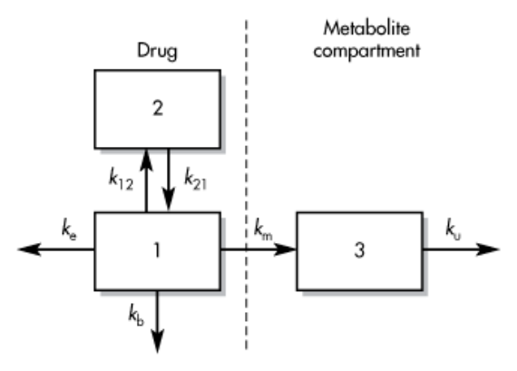
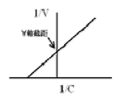

開卷有益 ／
藥師 ／ 藥劑學與生物藥劑學 ／ 105 年第 2 次105 年第 2 次藥師藥劑學與生物藥劑學試題與答案
這一頁是民國 105 年第 2 次藥師藥劑學與生物藥劑學的整份歷屆試題，共 80 題，題目與標準答案出自考選部「國家考試試題及測驗式試題答案」開放資料，其中 76 題附有詳解。以下逐題列出題幹、選項與答案；要計時作答或記錄成績，請用線上練習。
考選部原始場次代碼：105100
線上作答這一科 →
全部 80 題
第 1 題
一藥物（200 mg/mL）以零階次動力學降解，其反應速率常數為0.2 mg/mL/hr，請問其第一個半衰期多少hr？
（A） 1500（B） 1000（C） 500（D） 250答案：（C）
詳解與考點 正解：零階次降解的濃度隨時間等量下降，第一個半衰期用 t½ = C0/(2k0)。本題 C0 = 200 mg/mL，k0 = 0.2 mg/mL/hr；先求需降解的一半濃度：200 mg/mL ÷ 2 = 100 mg/mL。再以時間 = 濃度變化量/速率代入：t½ = 100 mg/mL / 0.2 mg/mL/hr = 500 hr，故選 C。
A：1500 hr 不符合零階次第一個半衰期的濃度差與速率相除結果；起始濃度與速率固定時，半衰期應為 500 hr。
B：1000 hr 來自 200 mg/mL / 0.2 mg/mL/hr，表示若零階速率一路維持，濃度降至零所需時間，不是降至一半的時間。
D：250 hr 等同把第一個半衰期的濃度變化量錯當成 50 mg/mL；實際需下降的是 100 mg/mL。
本題考點：零階次降解（zero-order degradation）——第一個半衰期以起始濃度的一半除以 k0 計算，後續半衰期會隨濃度降低而縮短；零階次速率常數的單位（zero-order rate constant）——k0 的濃度/時間單位可直接與濃度變化量相除得到時間。
第 2 題
根據USP定義，「%weight in volume」的正確單位表示為：
（A） g/100 mL（B） g/L（C） mg/100 mL（D） g/mL答案：（A）
詳解與考點 正解：%weight in volume 表示每 100 mL 製劑中含多少克溶質，標準寫法為 g/100 mL，故選 A。
B：g/L 雖也描述質量濃度，但分母是 1 L 而非 %w/v 固定的 100 mL，數值尺度相差十倍。
C：mg/100 mL 的體積分母正確，質量單位卻由 g 改為 mg；未另作換算時不是 %w/v 的標準表示。
D：g/mL 的分母為 1 mL，既不是百分濃度的基準體積，也會使數值大幅不同。
本題考點：重量體積百分濃度（percent weight in volume, %w/v）——見到 %w/v 就固定換成每 100 mL 的 g 數，不把它與 g/L 或 %w/w 混用；製劑濃度單位換算（pharmaceutical concentration units）——先確認分子是質量、分母是何種體積，再進行倍數換算。
第 3 題
下列何項之方程式，可利用它計算出弱酸鹽自溶液中沉澱析出時，溶液之pH值？
（A） Young-Dupr'e equation（B） Gibbs-Helmholtz equation（C） Michaelis-Menten equation（D） Henderson-Hasselbalch equation答案：（D）
詳解與考點 正解：弱酸鹽自溶液開始析出時，必須連結 pH、pKa 與離子化比例；Henderson-Hasselbalch equation 正是描述此酸鹼平衡的方程式，故選 D。
A：Young-Dupr'e equation 用於潤濕、接觸角與附著功等界面現象，不能由弱酸鹽的離子化比例求沉澱時的 pH。
B：Gibbs-Helmholtz equation 關聯熱力學函數與溫度，不是弱酸鹽溶解度與 pH 的直接計算式。
C：Michaelis-Menten equation 描述酵素反應速率與受質濃度的關係，與酸鹼造成的鹽類析出無關。
本題考點：Henderson-Hasselbalch equation——弱電解質的 pH、pKa 與離子型/非離子型比例互換時，用此式判斷何時可能達到本質溶解度而析出；弱酸鹽沉澱（weak-acid salt precipitation）——先判斷 pH 改變使哪一型增加，再連結其較低的溶解度。
第 4 題 待校
對於「酏劑（Elixirs）」之敘述下列何者正確？
（A） 通常含療效成分（B） 苯巴比妥酏可作為媒液，以供調劑其它藥物（C） 異醇酏內含之矯味劑為苦杏仁（D） 通常以滲漉法或浸漬法來製備本題送分，無標準答案
第 5 題
在製劑用溶媒中，常用下列何物取代甘油（glycerin）當作藥品與化妝品製劑之溶媒？
（A） 乙醇（alcohol）（B） 丙二醇（propylene glycol）（C） 異丙醇（isopropyl alcohol）（D） 聚乙二醇 400（polyethylene glycol 400）答案：（B）
詳解與考點 正解：製劑與化粧品中要以兼具水溶性、低揮發性與保濕性的溶媒取代 glycerin 時，常用 propylene glycol，故選 B。
A：ethanol 可作溶媒但揮發性高，且不具 glycerin 的典型保濕與增黏特性，不是此題所問的常用直接替代物。
C：isopropyl alcohol 也具揮發性，常見於外用清潔或消毒性產品；其用途與 propylene glycol 作為保濕性共溶媒不同。
D：polyethylene glycol 400 可用作某些製劑的溶媒或基劑，看似也可取代 glycerin；但題目所指藥品與化粧品中最常見的 glycerin 替代溶媒為（B）propylene glycol。
本題考點：共溶媒選擇（cosolvent selection）——要替代 glycerin 時，同時比較水互溶性、揮發性、保濕性與使用部位；propylene glycol（propylene glycol）——當題目強調藥品與化粧品的保濕性溶媒時，優先辨認其為 glycerin 的常見替代品。
第 6 題
以溶液法（solution method）製備芳香水劑時，每100 mL中需使用若干克之芳香物質？
（A） 0.2 g（B） 0.5 g（C） 1.0 g（D） 2.0 g答案：（A）
詳解與考點 正解：題幹限定以溶液法製備芳香水劑，規定的芳香物質用量為每 100 mL 含 0.2 g，故選 A。
B：0.5 g/100 mL 是規定量的 2.5 倍，濃度已高於溶液法的標準用量。
C：1.0 g/100 mL 是規定量的 5 倍，不能視為同一製備比例。
D：2.0 g/100 mL 是規定量的 10 倍，會把芳香物質的比例誤作更高濃度。
本題考點：芳香水劑（aromatic waters）——題目指定溶液法時，先以每 100 mL 的既定芳香物質量判斷，不與其他製法或濃縮製劑混用；製劑比例（formulation ratio）——濃度題先固定分母體積，再比較各選項的倍數差。
第 7 題
試問在那一個酸鹼值下，1% cocaine HCl中cocaine會開始沉澱（cocaine溶解度為0.0056 M，pKb=5.59，cocaine HCl分子量 為340；log2=0.301，log3=0.477）？
（A） 5.34（B） 6.28（C） 7.79（D） 8.87答案：（C）
詳解與考點 正解：cocaine 為弱鹼，開始析出時游離鹼濃度等於本質溶解度，因此用 Henderson-Hasselbalch equation。先換算總濃度：1% w/v = 1 g/100 mL = 10 g/L；Ct = 10 g/L / 340 g/mol = 0.0294 mol/L。析出起點 [B] = 0.0056 mol/L，[BH+] = 0.0294 mol/L - 0.0056 mol/L = 0.0238 mol/L。pKa = 14.00 - pKb = 14.00 - 5.59 = 8.41；pH = pKa + log([B]/[BH+]) = 8.41 + log(0.0056/0.0238) = 8.41 + log(0.235) = 8.41 - 0.63 = 7.78，約為 7.79，故選 C。
A：pH 5.34 遠低於 pKa 8.41，cocaine 主要維持為可溶的質子化型，游離鹼濃度未達 0.0056 mol/L 的析出條件。
B：pH 6.28 仍低於析出點，游離鹼與質子化型的比值不足，不能使游離 cocaine 達本質溶解度。
D：pH 8.87 高於正確析出 pH；此時游離鹼比例更高，沉澱會在到達該值以前就已開始形成。
本題考點：弱鹼沉澱 pH（precipitation pH of a weak base）——析出起點令游離鹼濃度等於本質溶解度，再以 pH = pKa + log([B]/[BH+]) 求值；濃度單位換算（concentration-unit conversion）——%w/v 必須先換成 g/L，再除以分子量化為 mol/L，否則酸鹼比例無法正確代入。
第 8 題
依藥典規定，下列有關浸膏劑（extracts）之敘述，何者錯誤？
（A） 係將生藥用滲漉法抽提製備之（B） 依其外形僅分軟塊狀浸膏和粉狀浸膏兩種（C） 粉狀浸膏劑可用乳糖當稀釋劑（D） 浸膏劑之脫脂，可使用石油本清當媒劑答案：（B）
詳解與考點 正解：浸膏劑依外形分三型——半液狀（糖漿狀稠度）浸膏、軟塊狀浸膏與粉狀浸膏；（B）只列軟塊狀與粉狀兩種，漏掉半液狀浸膏，分類不完整，因此為錯誤敘述，故選 B。
A：以滲漉法抽提出浸膏是其常用製備途徑，符合題目所述的抽提概念。
C：粉狀浸膏可加入 lactose 等適當賦形劑稀釋，以利調製與使用，敘述可成立。
D：以石油本清等非極性溶媒進行脫脂，是在抽提前後去除脂溶性雜質的作法之一，與浸膏製備相符。
本題考點：浸膏劑分類（extract classification）——依外觀判斷時，要保留半液狀、軟塊狀與粉狀三種型態，不能只記其中兩種；流浸膏劑（fluidextracts）是與浸膏劑並列的獨立劑型，1 mL 相當於 1 g 生藥，不可算作浸膏劑的一種外形；生藥抽提前處理（defatting of crude drugs）——遇到脫脂步驟時，以非極性溶媒去除脂質，再與主要有效成分的抽提目的分開判讀。
第 9 題
依Stokes' law，顆粒在稀薄懸浮液中自由下降，其下降速率與何項成反比關係？
（A） 顆粒直徑大小（B） 顆粒之密度大小（C） 分散媒液之密度（D） 分散媒液之黏度答案：（D）
詳解與考點 正解：依 Stokes' law，自由沉降速率可寫為 v = d²(ρp - ρm)g/(18η)。分散媒液黏度 η 位於分母，黏度越高阻力越大、下降越慢，故與下降速率成反比的是（D）分散媒液之黏度，故選 D。
A：顆粒直徑 d 在式中為平方項；顆粒變大會使沉降速率增加，不是反比關係。
B：顆粒密度 ρp 增大會擴大顆粒與分散媒的密度差，因而提高沉降速率。
C：分散媒液密度 ρm 影響的是密度差 ρp - ρm；在顆粒密度固定時，兩者越接近沉降越慢，不能單獨視為題目所問的反比項。
本題考點：Stokes' law——稀薄懸浮液的沉降速度看 d²、密度差與黏度，先用變數在分子或分母的位置判斷方向；懸浮液物理安定性（suspension physical stability）——欲減慢沉降時可提高分散媒黏度或降低粒徑，但兩種作法影響機制不同。
第 10 題
一粉末之重量為72 g，真密度（true density）為1.8 g/cm3，整體體積（bulk volume）為50 mL，則其整體孔度（porosity）為 何（%）？
（A） 13.8（B） 20（C） 22（D） 30答案：（B）
詳解與考點 正解：整體孔度以孔隙體積除以整體體積計算。真體積 = 72 g / 1.8 g/cm3 = 40 cm3 = 40 mL；孔隙體積 = 50 mL - 40 mL = 10 mL。孔度 = 10 mL / 50 mL × 100% = 20%，故選 B。
A：13.8% 不符合真體積 40 mL 與整體體積 50 mL 所得的孔隙比例；孔度的分母應是整體體積。
C：22% 未由 10 mL/50 mL 的孔隙比得到，與題目給定的重量、真密度及整體體積不符。
D：30% 會高估孔隙體積；已知真體積為 40 mL，50 mL 整體體積中僅餘 10 mL 空隙。
本題考點：真密度與真體積（true density and true volume）——先以質量/真密度求粉粒實際占據的體積；整體孔度（porosity）——用（整體體積 - 真體積）/整體體積 × 100% 計算，分母不可誤用為真體積。
第 11 題
微膠體助溶與乳化作用二者的相同點為：
（A） 均屬於單相系統（B） 分散相粒徑大小均一（C） 均含有界面活性劑（D） 外觀均為澄清透明答案：（C）
詳解與考點 正解：微膠體助溶與乳化作用都靠界面活性劑降低界面張力並形成聚集或分散結構，因此（C）為兩者共同點，故選 C。
A：微膠體助溶形成的 micellar solution 可呈單相；乳化則為一液體分散於另一液體的多相系統，不能同列為單相。
B：微膠體的聚集數與乳化液滴的粒徑分布受配方與製程影響，不保證兩者均一。
D：micellar solution 常澄清透明，但乳化液通常因液滴散射光線而混濁，外觀不是共同特徵。
本題考點：微膠體助溶（micellar solubilization）——判斷時看界面活性劑形成 micelles 並提高疏水性藥物的表觀溶解度；乳化（emulsification）——判斷時看液滴分散的多相系統，與澄清的 micellar solution 區分。
第 12 題
含有非離子性界面活性劑之溶液加熱至某一溫度時，溶液會產生沉澱而混濁，此一溫度稱為？
（A） Kraff溫度（B） 曇點（cloud point）（C） 臨界點（critical point）（D） 熔點（melting point）答案：（B）
詳解與考點 正解：含非離子性界面活性劑的溶液加熱後，親水鏈段水合下降而出現混濁或相分離的特徵溫度稱為曇點（cloud point），故選 B。
A：Krafft 溫度主要用於離子性界面活性劑，指其溶解度達到能形成 micelles 所需濃度的溫度，現象與非離子性界面活性劑的加熱混濁不同。
C：臨界點是液體與氣體相態不再可區分的熱力學概念，不能指稱界面活性劑溶液的混濁溫度。
D：熔點是固體轉為液體的溫度，並不描述溶液因界面活性劑脫水而混濁的現象。
本題考點：曇點（cloud point）——非離子性界面活性劑溶液加熱變混濁時，以此名稱判定；Krafft 溫度（Krafft temperature）——離子性界面活性劑的溶解度與 micelle 形成門檻要與非離子性界面活性劑的曇點分開記。
第 13 題
甲基藍（methylene blue）屬於下列何種界面活性劑？
（A） 非離子性（B） 陽離子性（C） 陰離子性（D） 兩性答案：（B）
詳解與考點 正解：methylene blue 在水中帶正電的染料離子，依電荷分類屬陽離子性界面活性劑，故選 B。
A：非離子性界面活性劑在水中不解離出帶電親水端；methylene blue 的分類依據是其陽離子性，不屬此類。
C：陰離子性界面活性劑的親水端帶負電，例如硫酸酯或磺酸鹽類；methylene blue 的帶電方向相反。
D：兩性界面活性劑同時具有可隨 pH 改變的正、負離子特徵；methylene blue 不是此類雙性結構。
本題考點：界面活性劑電荷分類（surfactant charge classification）——先看親水端在水中呈現的淨電荷，再分為陽離子、陰離子、非離子與兩性類；methylene blue（methylene blue）——題目以此物質考電荷分類時，依其陽離子特性判定。
第 14 題
毛細管黏度計管壁處之切應力與下列何項因素成正比？
（A） 毛細管半徑（B） 待測液體體積（C） 毛細管長度（D） 待測液體密度答案：（A）
詳解與考點 正解：毛細管內壁的切應力可寫為 τw = ΔP·r/(2L)。在壓差 ΔP 與管長 L 固定時，切應力 τw 與毛細管半徑 r 成正比，故選 A。
B：待測液體體積影響流出時間或可收集的量，但不直接出現在管壁切應力的式子中。
C：毛細管長度 L 位於分母；在其他條件相同時，管越長，管壁切應力反而越小。
D：待測液體密度不是此式在固定壓差下的直接比例變數；分辨關鍵在壓差與密度可能相關，不等於密度本身是管壁切應力的直接正比項。
本題考點：毛細管流動切應力（capillary wall shear stress）——先寫 τw = ΔP·r/(2L)，再以變數位於分子或分母判斷方向；毛細管黏度計（capillary viscometry）——流動時間、壓差與幾何尺寸各影響不同量，不能把對流量的影響直接當成對切應力的影響。
第 15 題
不同界面活性劑在稀水溶液開始形成微膠體時，一個微膠體通常含多少個界面活性劑分子？
（A） 少於25（B） 25~100（C） 500~1000（D） 多於1000答案：（B）
詳解與考點 正解：稀水溶液剛開始形成的典型微膠體，其 aggregation number 通常約為 25～100 個界面活性劑分子，故選 B。
A：少於 25 個分子的聚集體太小，不是此題所述一般 micelle 的典型聚集數範圍。
C：500～1000 個分子已遠高於通常微膠體的聚集數，不能作為一般值。
D：多於 1000 個分子更偏向大型聚集或其他分散結構，並非常見 micelle 的典型範圍。
本題考點：微膠體聚集數（micellar aggregation number）——問一個 micelle 含多少分子時，以數十個界面活性劑分子的量級判斷；臨界微膠體濃度（critical micelle concentration, CMC）——超過 CMC 才會大量形成 micelles，但 CMC 本身不是單一 micelle 的分子數。
第 16 題
下列何種製劑最不適合使用於陰道患部？
（A） 軟膏劑（B） 糊劑（C） 乳霜劑（D） 凍膠答案：（B）
詳解與考點 正解：陰道患部屬黏膜部位，製劑應易塗布、舒適且可適當分散。糊劑含高比例不溶性粉末，質地厚重且不易在黏膜均勻鋪展，最不適合，故選 B。
A：軟膏劑可作局部外用基劑，雖須依藥物與分泌物選擇親水或油性基劑，並非因劑型本身而最不適合。
C：乳霜劑較易塗展，也能兼具油相與水相特性，可作為局部黏膜周邊使用的選項。
D：凍膠具柔軟、易分散的特性，常較適合需要舒適塗布感的局部使用部位。
本題考點：黏膜局部製劑（mucosal topical dosage forms）——選擇陰道局部製劑時，優先看塗布性、刺激性、分散性與移除便利性；糊劑（pastes）——高固體粉末含量使其保護性與附著性高，但在濕潤黏膜上的均勻塗布性較差。
第 17 題
局部用皮膚產品（topical dermatological product）及經皮產品（transdermal product）的最重要的區別為：
（A） 基劑組成的比例不同（B） 產品製作的方法不同（C） 塗布使用患部的位置不同（D） 藥物作用的目的不同答案：（D）
詳解與考點 正解：區分 topical dermatological product 與 transdermal product 的核心是治療目的。前者使藥物在皮膚局部發揮作用，後者設計為穿越皮膚進入全身循環以產生系統性作用，故選 D。
A：兩類產品的基劑組成可不同，但同一類內也可有多種配方；配方比例不是定義兩者的最重要界線。
B：製作方法可能依劑型而異，卻不能單憑製程判定是局部作用或經皮全身作用。
C：兩者都可塗布於皮膚，塗布位置本身不足以區分；分辨關鍵在藥物預定停留於局部或進入系統循環。
本題考點：局部皮膚製劑（topical dermatological products）——判斷時看藥物作用是否以皮膚表面或皮內局部為目標；經皮製劑（transdermal products）——判斷時看是否以跨越皮膚、維持全身性藥物暴露為設計目的。
第 18 題
PEG 300中的「300」是什麼意思？
（A） 廠商開發時的第300個產品（B） 黏度（C） 分子重覆數（D） 平均分子量答案：（D）
詳解與考點 正解：PEG 的品名數字代表聚合物分布的平均分子量；PEG 300 的 300 對應平均分子量約為 300，而非單一分子固定鏈長，故選 D。
A：產品名稱不以廠商研發順序命名；同一系列的數字是規格辨識，不表示第幾項產品。
B：黏度會隨平均分子量改變，但不是 PEG 品名中數字所直接表示的物理量。
C：聚乙二醇含不同鏈長的分子，沒有一個固定的分子重複數可由 300 直接指定。
本題考點：聚乙二醇命名（polyethylene glycol nomenclature）——見到 PEG 後的數字時，優先判為平均分子量規格；高分子分散性（polymer polydispersity）——聚合物為鏈長分布，不能把平均分子量當成固定重複單元數。
第 19 題
在22℃，下列何者近於半固狀？
（A） PEG 200（B） PEG 600（C） PEG 1540（D） PEG 3000答案：（B）
詳解與考點 正解：在 22℃ 判斷 PEG 的外觀時，要看平均分子量上升後熔融範圍也上升的趨勢。PEG 600 的熔融範圍接近室溫，通常呈半固狀，故選 B。
A：PEG 200 的平均分子量較低，在室溫通常為黏稠液體，未達半固狀的外觀。
C：PEG 1540 的平均分子量更高，室溫下已偏蠟狀固體，而非題目所問的近於半固狀。
D：PEG 3000 的熔融範圍高於室溫，常為較硬的固體。
本題考點：PEG 的物理狀態（physical state of polyethylene glycol）——比較同系列 PEG 時，平均分子量愈高，室溫外觀會由液體轉為半固體再轉為固體；熔融範圍（melting range）——接近使用溫度的熔融範圍最容易表現為半固狀。
第 20 題
界面活性劑Arlacels其性質與下列何者最為接近？
（A） Brijs（B） Myrjs（C） Spans（D） Tweens答案：（C）
詳解與考點 正解：Arlacels 與 Spans 都是 sorbitan fatty acid esters，帶有相近的低 HLB 與親油性特徵，常用於 W/O 型乳劑，故選 C。
A：Brijs 為 polyoxyethylene fatty alcohol ethers，親水端的化學骨架不是 sorbitan ester。
B：Myrjs 為 polyoxyethylene stearates，雖同樣可作界面活性劑，但結構與 Arlacels 不同。
D：Tweens 為 polyoxyethylene sorbitan esters，比 Arlacels 多了 polyoxyethylene 親水鏈段，性質較偏親水。
本題考點：非離子界面活性劑分類（nonionic surfactant classification）——先辨認親水端與脂肪酸酯骨架，再比對商品系列；HLB 系統（hydrophile-lipophile balance）——低 HLB 偏親油、傾向 W/O，高 HLB 偏親水、傾向 O/W。
第 21 題
以可可脂製作下列何種藥物栓劑時，應考量其基劑的安定性？
（A） 氧化鋅（B） 魚石脂（C） 阿斯匹林（D） 水合三氯乙醛答案：（D）
詳解與考點 正解：水合三氯乙醛與可可脂可形成低熔點的共熔組合，會使基劑軟化甚至液化；以可可脂製作此藥物栓劑時，必須特別考量基劑的安定性，故選 D。
A：氧化鋅為不溶性粉末，製備時主要考量懸浮均勻與沉降，不是與可可脂形成低熔點共熔組合的典型問題。
B：魚石脂須評估分散性與相容性，但不是本題所指會明顯降低可可脂熔點的經典組合。
C：阿斯匹靈較應注意水解等藥物本身的化學安定性，不能據此推成可可脂基劑會發生共熔軟化。
本題考點：可可脂栓劑基劑（cocoa butter suppository base）——遇到可與脂肪性基劑混溶的藥物時，要先判斷是否會降低熔點；共熔現象（eutectic formation）——兩成分形成較低熔點組合時，基劑可能失去室溫所需的硬度。
第 22 題
皮膚主要影響藥物穿透的位置是在那一部位？
（A） 角質層（B） 細胞層（C） 真皮層（D） 皮下組織答案：（A）
詳解與考點 正解：皮膚經皮穿透的主要阻力位於角質層；其角質細胞與細胞間脂質形成緻密屏障，藥物必須先跨越此層才可往較深部位移動，故選 A。
B：活性表皮細胞層較為含水，雖仍是擴散路徑的一部分，但阻力通常低於最外側角質層。
C：真皮層有血管供應，藥物到達後較容易被吸收進入循環，並非主要穿透屏障。
D：皮下組織位於更深部，藥物必須先通過表皮與真皮，不能作為主要限制位置。
本題考點：經皮吸收（percutaneous absorption）——判斷皮膚穿透限制時，先找角質層而非血流豐富的深層組織；角質層脂質屏障（stratum corneum lipid barrier）——藥物的脂溶性與分配行為主要在此層影響通透性。
第 23 題
在皮膚的表皮層中那一層位於最內層？
（A） 角質層（stratum corneum）（B） 顆粒層（stratum granulosum）（C） 棘狀層（stratum spinosum）（D） 發生層（stratum germinativum）答案：（D）
詳解與考點 正解：表皮由外向內依序可見角質層、顆粒層、棘狀層與發生層；發生層又稱基底層，貼近真皮，因此是題目四層中最內層，故選 D。
A：角質層是表皮最外側的角化層，與最內層的位置相反。
B：顆粒層位在角質層之下、棘狀層之上，仍屬較表淺的位置。
C：棘狀層雖比顆粒層深，但其下方仍有發生層，不能算最內層。
本題考點：表皮分層（epidermal layers）——由外向內背出層次後，再以是否貼近真皮判斷最內層；發生層（stratum germinativum）——此層具細胞增生能力，亦常稱基底層。
第 24 題
Betamethasone valerate ointment用於皮膚時，中華藥典第七版要求應進行下列何種菌的微生物限量試驗（microbial limits）？
（A） 肺炎球菌（B） 黴菌（C） 酵母菌（D） 綠膿桿菌答案：（D）
詳解與考點 正解：Betamethasone valerate ointment 為供皮膚使用的非無菌軟膏；依題目指定的中華藥典第七版，微生物限量試驗須注意指定微生物 Pseudomonas aeruginosa，故選 D。
A：肺炎球菌不是此類外用軟膏微生物限量試驗所指定的目標菌。
B：黴菌是菌數評估中的一類微生物，不能取代本題所問的指定目標菌。
C：酵母菌同樣屬菌數評估的類別，而非本題應檢出的指定細菌。
本題考點：微生物限量試驗（microbial limits test）——先依給藥途徑與製劑類型判斷需檢的指定微生物；總酵母菌及黴菌數（total yeast and mold count）——總菌數類檢測與特定目標菌的不得檢出是不同判準。
第 25 題
流動床包覆製程有top-spray、bottom-spray、tangential-spray等三種噴灑包覆法，只有由上往下噴（top-spray）的包覆製程 較不建議用於下列何種包覆？
（A） Barrier film（B） Enteric coating（C） Sustained release（D） Taste masking答案：（C）
詳解與考點 正解：緩釋包衣必須形成厚度均一且連續的控釋膜，才能讓每顆粒子的釋放速率一致。top-spray 較不利於精準累積均勻包衣，故在三種作法中較不建議用於 sustained release，故選 C。
A：Barrier film 的目的多為隔絕水分、氧氣或成分接觸；在適當條件下可用 top-spray 形成保護膜，不是本題最不建議的用途。
B：Enteric coating 也需要完整膜層，但其製程選擇仍可依設備與配方調整，不能直接等同於最不適用 top-spray。
D：Taste masking 著重在阻隔口腔中快速溶出，所需包衣的均一性要求通常不像長時間控釋那樣嚴格。
本題考點：流動床包衣（fluid-bed coating）——比較噴灑方式時，要把粒子循環路徑與膜層均一性連到製劑目的；緩釋包衣（sustained-release coating）——控釋膜的厚度與連續性一有差異，就會放大成釋放速率差異。
第 26 題
下列有關於「硬膠囊劑」之副料中，何者通常對於粉粒之流動性助益不大？
（A） 氯化鈣（B） 滑石粉（C） 硬脂酸鎂（D） 膠態矽答案：（A）
詳解與考點 正解：硬膠囊填充粉粒要改善流動性，通常會加入滑石粉、硬脂酸鎂或膠態矽等助流動相關副料。氯化鈣本身高度吸濕，反而可能使粉粒受潮結塊，對流動性助益不大，故選 A。
B：滑石粉可降低粒子間摩擦並減少黏附，常作為助流動或抗黏著副料。
C：硬脂酸鎂主要為潤滑劑，也能減少粉粒與設備及彼此間的摩擦，對填充流動有幫助。
D：膠態矽可附著於粒子表面、降低粒子間作用力，是常見的助流動劑。
本題考點：粉體流動性（powder flowability）——挑選硬膠囊副料時，先區分助流動劑與會吸濕結塊的物質；助流動劑（glidant）——藉由降低粒子間摩擦與內聚力，改善粉粒進入囊體時的均一性。
第 27 題
下列有關於「硬明膠膠囊劑」之敘述，何者較正確？
（A） 所謂適當之充填，通常係指其粉粒能填滿囊體而非囊蓋（B） 貯藏時，宜置於濕度10%以下之乾燥環境中（C） 膠囊殼若呈透明狀，通常係因其殼內含甘油所致（D） 膠囊殼中不宜充填液體藥物答案：（A）
詳解與考點 正解：硬明膠膠囊的囊體用來容納粉粒，囊蓋用於套合封閉；適當充填是使內容物填入囊體而不妨礙囊蓋閉合，故選 A。
B：濕度低於 10% 會使明膠殼過度失水而脆裂，貯藏時不能只追求愈乾愈好。
C：甘油是軟明膠膠囊常見的增塑劑；硬明膠囊殼是否透明主要取決於是否加入遮光或著色材料，不可據透明外觀推定含有甘油。
D：硬明膠膠囊可在相容性與密封條件適當時充填非水性液體或半固體，不能一概說不宜充填液體藥物。
本題考點：硬明膠膠囊結構（hard gelatin capsule structure）——囊體負責盛裝、囊蓋負責閉合，填充量須保留套合空間；明膠含水量（gelatin moisture content）——過乾易脆裂、受潮易軟化，貯藏要維持適當濕度。
第 28 題
關於「明膠硬膠囊」之敘述，下列何者正確？
（A） 動物用者，5號囊殼之容量最小（B） 充填325 mg之aspirin時，宜選用0號囊殼較適合（C） 囊殼之生產與藥物之充填，工業上通常是以同部機器一貫作業而成（D） 為防內容物滲出，於囊蓋及囊體上可有預製環扣，充填後隨即加以扣緊答案：（D）
詳解與考點 正解：明膠硬膠囊的囊蓋與囊體可設計預製環扣，充填後扣緊可降低兩者分離與內容物逸出的機會，故選 D。
A：囊殼規格 000～5 號供人用，其中 5 號容量最小；動物用另有 10、11、12 號等大容量規格，均遠大於人用 000 號，其中最小者為 12 號，故此敘述不成立。
B：選擇囊殼大小還要看粉末的堆積密度與填充性，僅知道 aspirin 為 325 mg，不能直接判定 0 號囊殼最適合。
C：囊殼製造、乾燥與檢驗通常先完成，再以另一套設備進行藥物充填，並非同一部機器一貫作業。
本題考點：硬膠囊閉合裝置（hard capsule locking system）——看到囊蓋與囊體的環扣時，判斷其功能為防止分離與內容物逸出；囊殼規格選擇（capsule size selection）——劑量必須連同粉體堆積密度與流動性一起判斷，不能只憑重量選尺寸。
第 29 題
下列有關微粒包衣（microencapsulation）之敘述，何者正確？
（A） 通常包衣重量占全部微粒重量之比例大於50%（B） 所使用之包衣高分子種類對藥物釋放速率無影響（C） 口服後微粒易集中在腸胃道中特定位置（D） 可利用包衣及核心之重量比調整藥物釋放速率答案：（D）
詳解與考點 正解：微粒包衣的核心與包衣重量比會改變藥物從核心到外界的擴散路徑與阻力，因此可用來調整釋放速率，故選 D。
A：包衣比例會依目的與材料而變，但包衣通常是控制釋放的膜層，不能把大於全部微粒重量的 50% 當成通則。
B：包衣高分子的溶解性、通透性與侵蝕性都會影響藥物離開核心的速度，並非沒有影響。
C：微粒口服後會隨腸胃內容物分散移動，通常不易集中於單一特定位置。
本題考點：微粒包衣（microencapsulation）——比較核心與包衣比例時，比例改變會改變擴散阻力與釋放時間；高分子控制釋放（polymer-controlled release）——選擇高分子時，要同時判斷膜的通透性、溶解性與侵蝕行為。
第 30 題
在Film model theory中將可溶性固體之溶離分為①由固體溶解於外層之stagnant layer ②由stagnant layer擴散至溶離液兩步 驟，其主要速率決定步驟為何？
（A） 僅①（B） 僅②（C） ①②（D） 固體之溶解度答案：（B）
詳解與考點 正解：Film model theory 假設固體表面附近的 stagnant layer 很快達到飽和濃度，之後藥物穿過此層擴散至主體溶離液的傳質較慢，因此主要速率決定步驟是第二步，故選 B。
A：只把固體進入 stagnant layer 視為決定步驟，忽略了飽和邊界層到主體液間的擴散阻力。
C：兩個步驟雖會依序發生，但第一步在模型假設下較快建立飽和，不能因為都存在就同列為主要速率決定步驟。
D：固體溶解度會決定表面飽和濃度與濃度梯度，屬影響因子而不是兩步傳質中的速率決定步驟。
本題考點：液膜理論（film model theory）——固體表面形成飽和液膜後，先判斷跨液膜擴散是否為主要阻力；溶離速率（dissolution rate）——溶解度影響濃度梯度，擴散層厚度與擴散係數則影響傳質速度。
第 31 題
氯化鈣稱重時使用下列何者最適合？
（A） 稱量紙（B） 稱重皿（C） 稱重瓶（D） 燒杯答案：（C）
詳解與考點 正解：氯化鈣易吸濕甚至潮解，稱量時需要能加蓋、降低與空氣接觸的容器；稱重瓶最符合這個需求，故選 C。
A：稱量紙無法阻隔濕氣，氯化鈣易在操作中吸水增重，也較可能黏附或散失。
B：稱重皿開口較大且通常無法密封，對高度吸濕物質的保護不足。
D：燒杯不是為精密稱量設計，開口暴露面積大，也不利於快速加蓋保存。
本題考點：吸濕性物質稱量（weighing hygroscopic substances）——遇到易吸濕或潮解的固體，優先選可密封的稱重容器；稱重瓶（weighing bottle）——用於降低操作期間的水分吸收並協助定量轉移。
第 32 題
依中華藥典第七版，下列那一培養基用於混濁或具黏性製劑之好氧菌或厭氧菌之無菌試驗？
（A） 乳糖培養基（B） 甘露糖醇瓊脂培養基（C） 四硫酸鹽培養基（D） 硫醇乙酸鹽培養基II答案：（D）
詳解與考點 正解：題幹限定混濁或具黏性的製劑，依中華藥典第七版的無菌試驗，硫醇乙酸鹽培養基II可提供適合好氧菌與厭氧菌生長的條件，故選 D。
A：乳糖培養基不是本題指定用於此類製劑無菌試驗的培養基。
B：甘露糖醇瓊脂培養基具有選擇性，常用於特定菌群的鑑別或培養，不是同時評估好氧菌與厭氧菌的無菌試驗主培養基。
C：四硫酸鹽培養基為選擇性增菌培養基，使用目的不等同於本題的無菌試驗。
本題考點：無菌試驗培養基（sterility test media）——先依製劑性質與欲檢出的菌種選擇規定培養基；硫醇乙酸鹽培養基（thioglycollate medium）——其還原環境有助於厭氧菌培養，並可用於細菌無菌試驗。
第 33 題
注射劑微粒物質肇因於外來不溶性、移動性粒子非故意性之污染，在注射劑微粒物質檢查法中，注射劑容量少於100 mL者， 以每容器計算，大於或等於10 µm者不得超過a個，大於或等於25 µm者不得超過b個，（a，b）為多少？
（A） （25，3）（B） （100，10）（C） （1000，100）（D） （6000，600）答案：（D）
詳解與考點 正解：題幹已限定注射劑容量少於 100 mL，且以每一容器計算；依中華藥典第七版，大於或等於 10 µm 的微粒不得超過 6000 個，大於或等於 25 µm 的微粒不得超過 600 個，故選 D。
A：25 與 3 個雖同樣讓較大粒子的限量較小，但不符合本題此容量類別的規定數值。
B：100 與 10 個把容器允收微粒數設得過低，與題目指定的每容器標準不符。
C：1000 與 100 個同樣不是此容量類別所對應的限量組合。
本題考點：注射劑微粒物質檢查（particulate matter test）——先找製劑容量區間與計數基準，再套用相應粒徑限量；粒徑分級（particle-size threshold）——較大的 25 µm 微粒限量必須低於 10 µm 微粒，但仍須使用同一容量類別的成對標準。
第 34 題
那一項製劑會因活性成分干擾，不能使用LAL（Limulus amebocyte lysate）法測定內毒素？
（A） 血漿蛋白（B） Pentobarbital sodium注射液（C） 無菌注射用水（D） Vancomycin HCl注射液答案：（D）
詳解與考點 正解：LAL（Limulus amebocyte lysate）法依賴鱟血細胞裂解液對內毒素的反應；Vancomycin HCl 注射液的活性成分會干擾該反應，因此不能用此法測定內毒素，故選 D。
A：血漿蛋白等複雜基質可能需要評估抑制或增強效應，但不能僅因含蛋白就判定必然無法使用 LAL 法。
B：Pentobarbital sodium 注射液同樣應先確認試驗干擾性；其製劑身分本身不等於本題所問的特定不可用情形。
C：無菌注射用水不含會造成題目所述干擾的活性成分，不能作為答案。
本題考點：細菌內毒素試驗（bacterial endotoxins test）——使用 LAL 法前，要先確認製劑成分不會抑制或增強反應；製劑干擾（product interference）——同為注射液不代表適用同一檢驗法，判準在基質對檢測反應的影響。
第 35 題
依中華藥典第七版進行無菌試驗時，採用直接接種法應培養觀察幾天以上？
（A） 3（B） 7（C） 14（D） 21答案：（C）
詳解與考點 正解：直接接種法進行無菌試驗時，必須給可能存在的微生物足夠培養時間生長；依題目指定的中華藥典第七版，培養觀察至少 14 天，故選 C。
A：3 天不足以涵蓋生長較慢的微生物，不能符合無菌試驗的最低觀察期。
B：7 天仍短於題目規定的最少培養觀察時間。
D：21 天雖比最低時間長，但題目問的是至少需要的天數，不能以較長時間取代規定下限。
本題考點：直接接種法（direct inoculation method）——把製劑直接接入培養基後，要依規定培養至最低觀察期；無菌試驗培養期（sterility test incubation period）——設定較長觀察時間是為了提高發現緩慢生長污染微生物的機會。
第 36 題
依中華藥典第七版，注射劑進行昇血壓物質檢驗時，是採用何種動物進行測試？
（A） 老鼠（B） 兔子（C） 狗（D） 猴子答案：（C）
詳解與考點 正解：昇血壓物質檢驗觀察的是注射後的血壓反應；依題目指定的中華藥典第七版，此試驗採用狗作為試驗動物，故選 C。
A：老鼠體型小，並非本題藥典所規定用於昇血壓物質檢驗的動物。
B：兔子常與其他注射劑生物試驗連結，但昇血壓物質檢驗的規定動物不是兔子。
D：猴子不是本題所述試驗的規定動物，不能因其可用於其他研究就推定適用。
本題考點：昇血壓物質檢驗（pressor substances test）——先分清題目問的是血壓反應試驗而非其他注射劑生物試驗；藥典試驗動物（pharmacopoeial test animal）——動物種類屬版本指定的試驗條件，須與試驗名稱成對記憶。
第 37 題
冷凍乾燥過程中的冷凍過程（freezing stage），產品溶液之溫度應低於下列何種溫度最為適當？
（A） 體溫（body temperature）（B） 室溫（room temperature）（C） 熔點溫度（melting point）（D） 共熔溫度（eutectic temperature）答案：（D）
詳解與考點 正解：冷凍乾燥的冷凍階段要使配方中的成分完全凍結，產品溶液溫度必須低於共熔溫度，才可在後續昇華時維持固態結構，故選 D。
A：體溫遠高於冷凍製程所需溫度，無法使產品充分凍結。
B：室溫同樣高於冷凍條件，產品仍會保持液態或部分液態。
C：單一成分的熔點不能取代整個配方的共熔溫度；多成分系統是否完全凍結要看共熔條件。
本題考點：冷凍乾燥冷凍階段（freeze-drying freezing stage）——先使產品低於共熔溫度，確保可昇華的水分已形成冰；共熔溫度（eutectic temperature）——多成分配方以此溫度判斷是否能在不熔融的狀態下進入乾燥。
第 38 題
中華藥典第七版對用於製備注射劑之非水性溶媒（nonaqueous vehicles）之合成脂肪酸甘油酯的碘價有所規範，注射劑用脂 肪酸甘油酯之碘價應多少始符合藥典規定？
（A） 135（B） 145（C） 155（D） 165答案：（A）
詳解與考點 正解：判準是注射劑用合成脂肪酸甘油酯的碘價必須落在中華藥典第七版所定範圍內。碘價反映脂肪酸的不飽和程度；在四個數值中，（A）135 符合題示規格，故選 A。
B：145 雖只比（A）135 高 10，但已超出藥典對注射劑用合成脂肪酸甘油酯所定的碘價限度（不得大於 140）；此處不能把一般油脂的可接受範圍套用到注射用非水性溶媒。
C：155 的不飽和度指標更高，同樣超過不得大於 140 的限度，仍未符合該注射劑用合成脂肪酸甘油酯的藥典規格。
D：165 高出限度更多；碘價不是愈高愈適合作為注射劑非水性溶媒，超過 140 即不符規定。
本題考點：碘價（iodine value）——判斷脂質原料規格時，以碘吸收量反映雙鍵程度，須依指定製劑用途的限度比對；非水性注射劑溶媒（nonaqueous vehicles）——同一原料用於注射劑時，規格控制要比一般外用或口服製劑更嚴格。
第 39 題
中華藥典第七版cefazolin眼用溶液配方中，使用下列何者作為保藏劑？
（A） Benzalkonium chloride（B） Phenylmercuric nitrate（C） Thimerosal（D） Chlorobutanol答案：（C）
詳解與考點 正解：關鍵在中華藥典第七版所列 cefazolin 眼用溶液的指定配方，而不是任一可用於眼用製劑的保藏劑。（C）Thimerosal 是該配方列用的保藏劑，故選 C。
A：Benzalkonium chloride 雖可見於其他眼用製劑作保藏劑，但不是題目所指 cefazolin 眼用溶液的配方成分。
B：Phenylmercuric nitrate 亦屬可用於部分製劑的保藏成分，但未列為本題指定藥典配方的保藏劑。
D：Chlorobutanol 可作某些製劑的保藏劑；分辨關鍵在藥典品項的實際處方，不在於其是否具保藏作用。
本題考點：眼用製劑保藏劑（ophthalmic preservatives）——先辨識題目問的是一般適用性或指定處方，後者必須依該品項配方作答；藥典品項組成（pharmacopoeial monograph composition）——同類用途的賦形劑可以不同，不能以常見性取代品項規定。
第 40 題
中華藥典第七版注射用苄青黴素鉀是benzylpenicllin potassium與下列何種成分之乾粉混合物？
（A） 碳酸鈉（B） 甘露醇（C） 精胺酸（D） 檸檬酸鈉答案：（D）
詳解與考點 正解：本題要辨識注射用苄青黴素鉀的藥典定義。該乾粉為 benzylpenicillin potassium 與（D）檸檬酸鈉的混合物，故選 D。
A：碳酸鈉可在其他配方中用來調整酸鹼性，但不是本品藥典定義所列的混合成分。
B：甘露醇可作賦形劑或填充劑，卻不是題目所指注射用苄青黴素鉀的指定共存成分。
C：精胺酸可在其他製劑中作為胺基酸類助劑；此題考的是品項的固定組成，不能依一般配方功能替換。
本題考點：藥典品項組成（pharmacopoeial monograph composition）——遇到「與何成分的混合物」時，應以該品項的規定組成辨識，不能只看賦形劑的一般用途；無菌乾粉製劑（sterile dry powder preparation）——主藥以外的成分須同時符合安定性與品項規格。
第 41 題
根據藥典規定，無菌注射劑中之乾粉或油溶液不得貯存於下列何種玻璃容器？
（A） Type I（B） Type II（C） Type III（D） Type NP答案：（D）
詳解與考點 正解：判斷容器是否適用時，要把製劑型態與玻璃的耐水性分類一起看。無菌乾粉或油溶液可依藥典使用相應的注射劑玻璃，但（D）Type NP 為一般用途玻璃，並非此類無菌注射劑可用的容器，故選 D。
A：Type I 具高耐水性，適用於注射劑容器，因此不是題目所問不得使用的類別。
B：Type II 為藥典列出的注射劑玻璃類別之一；其適用性須依製劑性質判定，不能與一般用途玻璃混為一談。
C：Type III 可用於乾粉或非水性油溶液等不直接以水性內容物長期接觸的情況，故不符題目的排除條件。
本題考點：藥用玻璃分類（pharmaceutical glass types）——先依玻璃耐水性，再依製劑是水性、油性或乾粉選擇容器；注射劑容器相容性（parenteral container compatibility）——無菌不等於任一玻璃皆可用，容器須符合該製劑的藥典適用範圍。
第 42 題
下列那一項微生物保藏劑用於眼用軟膏時，其濃度過高？
（A） 0.05% methylparaben（B） 0.1% benzalkonium chloride（C） 0.5% chlorobutanol（D） 0.01% propylparaben答案：（B）
詳解與考點 正解：關鍵在眼組織對保藏劑的耐受度；benzalkonium chloride 為具界面活性的季銨鹽，濃度過高會增加刺激與毒性。（B）0.1% benzalkonium chloride 超出眼用軟膏可接受的保藏濃度，故選 B。
A：0.05% methylparaben 在題目所列濃度下並非過高；paraben 類的判斷要與 benzalkonium chloride 的強界面活性分開。
C：0.5% chlorobutanol 是題目設定中可接受的濃度，不能因其數值高於其他選項就判為過量。
D：0.01% propylparaben 的濃度亦未超出題目所問眼用軟膏的可用範圍。
本題考點：眼用製劑保藏劑（ophthalmic preservatives）——比較濃度時須連同保藏劑本身的刺激性與效力判斷，不能只比較百分比大小；Benzalkonium chloride——季銨鹽類保藏劑具界面活性，眼用時濃度控制尤其重要。
第 43 題
中華藥典第七版透析用滅菌溶液之容量超過多少時，容器上應標示「不得供靜脈注射用」？
（A） 10 mL（B） 500 mL（C） 1 L（D） 100 mL答案：（C）
詳解與考點 正解：本題以容器容量作標示門檻。透析用滅菌溶液的容器容量超過（C）1 L 時，應標示「不得供靜脈注射用」，以避免大容量透析液被誤作靜脈注射液，故選 C。
A：10 mL 遠低於題示標示門檻，並非透析用滅菌溶液須加註該警語的容量界線。
B：500 mL 尚未達到超過（C）1 L 的條件，不能把一般大容量容器的印象當成規範門檻。
D：100 mL 同樣未達題示容量；此題問的是容器容量超過何值，而非任何透析液容器都必須加註警語。
本題考點：透析用滅菌溶液標示（dialysis solution labeling）——遇到容量門檻時，先辨別「超過」與「達到」的語意，再比對選項數值；給藥途徑防錯標示（route-of-administration labeling）——大容量透析液與靜脈注射液用途不同，警語的功能是避免錯誤途徑使用。
第 44 題
依中華藥典第七版「注射劑玻璃容器試驗法」，其水檢品除了進行鹼度試驗外，尚需進行那兩項含量試驗？
（A） 鉛、砷（B） 硼、鈉（C） 矽、銅（D） 鉀、鈣答案：（A）
詳解與考點 正解：注射劑玻璃容器試驗的水檢品不只評估鹼度，也要確認可溶出之有害元素。（A）鉛、砷是鹼度試驗外須進行的兩項含量試驗，故選 A。
B：硼、鈉可與玻璃組成有關，但不是題目所指水檢品在此試驗法中規定併做的兩項含量試驗。
C：矽、銅並非本題所問的成對檢測項目；判別重點是水檢品的安全性檢查，不是列舉玻璃可能含有的所有元素。
D：鉀、鈣也不是該法與鹼度試驗併列的含量試驗組合。
本題考點：注射劑玻璃容器試驗（glass containers for injections test）——水檢品用來檢視容器與內容物接觸後的溶出風險，須把鹼度與指定有害元素檢查一併記憶；容器溶出物（container leachables）——判斷檢驗項目時看安全風險導向，不以玻璃主成分取代規定檢項。
第 45 題
已知下列藥品對肝細胞之穿透力（permeability）都很強，其他相關資訊如下表： A藥B藥C藥D藥 肝臟固有清除率（L/min）20 0.5 1 0.1 血中蛋白質結合率（%） 50 10 80 95 今肝血流由1.5 L/min降為1 L/min
項目 A藥 B藥 C藥 D藥 肝臟固有清除率（L/min） 20 0.5 1 0.1 血中蛋白質結合率（%） 50 10 80 95
（A） 改變肝臟血流，對A藥清除率之改變最大；對D藥清除率之改變最小（B） 改變肝臟血流，對B藥清除率之改變最大；對C藥清除率之改變最小（C） 改變肝臟血流，對C藥清除率之改變最大；對B藥清除率之改變最小（D） 改變肝臟血流，對D藥清除率之改變最大；對A藥清除率之改變最小答案：（A）
第 46 題
有一藥品靜脈注射給予50 mg後，血中濃度估算公式：C(t)=4e-1.386+1e-0.0866。給與同藥口服緩釋劑型50 mg後，血中濃度估 算公式：C(t)=0.267e-0.0866t-0.267e-1.386t。由體外溶離試驗顯示其釋放速率常數為0.35 h-1，請判斷下列敘述何者正確？（C 為µg/mL，t為h）
（A） 根據分室理論，本藥無法判斷其分室數目（B） 根據分室理論，本藥為一室模式藥品（C） 根據分室理論，本藥為二室模式藥品（D） 此例中，口服後所得1.386 h-1為真正的吸收速率常數本題送分，無標準答案
詳解與考點 本題經考選部公告一律給分。靜注公式含兩個指數項（4e^-1.386t＋1e^-0.0866t），依二室模式理論血中濃度雙指數衰減即代表分佈相與消除相並存，故(C)二室模式可成立、(B)一室模式不成立、(A)無法判斷亦不成立；惟口服公式同樣以1.386與0.0866兩指數呈現，究竟1.386代表真正吸收速率常數抑或僅為分佈相之混成常數（hybrid rate constant），因體外溶離常數0.35 h-1與兩者皆不相符，(D)是否成立學理上有爭議，與(C)之判斷互相牽動。作答以現行藥物動力學分室理論為準。
第 47 題
某藥投與700 mg後得到藥動方程式為Cp(mg/L) = 51e-1.41t + 19 e-0.145t，此藥中央室的分布體積為若干公升（L）？
（A） 10（B） 14（C） 20（D） 36答案：（A）
詳解與考點 正解：二室模式靜脈注射後，中央室初始濃度為兩個係數相加。由 Cp(t) = 51e^-1.41t + 19e^-0.145t，t = 0 時 Cp(0) = 51 mg/L + 19 mg/L = 70 mg/L。中央室分布體積用 Vc = Dose/Cp(0)，所以 Vc = 700 mg / 70 mg/L = 10 L，故選 A。
B：14 L 約為只取第一項係數 51 mg/L 單獨計算的結果（700÷51≒13.7），但初始濃度必須同時納入 51 mg/L 與 19 mg/L。
C：20 L 不符合 Vc = 700 mg / 70 mg/L 的代入結果；不能把分布體積直接由任一速率常數或任一係數推得。
D：36 L 約為只取第二項係數 19 mg/L 單獨計算的結果（700÷19≒36.8），同樣不是初始濃度相加後的計算結果；兩個指數項的速率常數用於描述濃度隨時間的變化，不是 Vc 的分母。
本題考點：中央室分布體積（central compartment volume, Vc）——二室靜脈注射模型先取 t = 0 時的 Cp(0) = A + B，再以 Dose/Cp(0) 計算；雙指數濃度式（biexponential concentration equation）——係數決定初始濃度組成，指數速率常數決定各相下降速度，兩者不可混用。
第 48 題
下圖所表示的藥物動力學模型代表此藥物可藉由腎臟排泄（ke），膽汁排泄（kb）及藥品代謝（km）由體內排除。代謝物在體 內的分布遵循一室開放模式，並由尿液排泄（ku）。問針對模室1而言，本藥的總排除速率常數（k）可用下列那一公式表示？

（A） k = k12＋ke＋kb＋km（B） k = k12＋ke＋kb＋km－k21（C） k = ke＋kb＋km（D） k = ke＋kb＋km＋ku答案：（C）
詳解與考點 正解：由 compartment 1（藥物中央室）向外的路徑共有三條：ke（腎臟排泄）、kb（膽汁排泄）與 km（代謝，通向代謝物室 compartment 3），三者都指向體外或跨入代謝物區，屬於藥物真正被排除的途徑；k12 與 k21 只是藥物在中央室與周邊室（compartment 2）間可逆的分布交換，藥物最終仍會經 k21 返回中央室、並未離開體內，因此不計入排除速率常數，總排除速率常數應為 k = ke+kb+km，故選 C。
A：k12+ke+kb+km 把僅代表分布用的 k12 也計入排除速率常數，但 k12 描述的是藥物進入周邊室後仍會經 k21 返回，並非藥物離開體內的途徑，不應併入。
B：k12+ke+kb+km-k21 同樣誤將 k12 計入、又額外扣掉 k21，但 k12 與 k21 是同一組可逆分布過程的兩個方向，本就不屬於總排除速率常數的組成項，不能用相減方式湊入公式。
D：ke+kb+km+ku 把代謝物室（compartment 3）的尿液排泄速率常數 ku 也算入，但 ku 描述的是代謝物本身的排除，屬於 compartment 3 的排除，與母藥（compartment 1）的總排除速率常數是兩個獨立的量，不可合併計算。
本題考點：多室模式的排除速率常數判讀——只有真正離開體內或跨入代謝物室的路徑才計入總排除速率常數 k，室間可逆分布（k12、k21）一律不計入；母藥與代謝物排除的區隔——代謝物室（compartment 3）的 ku 是代謝物自身的排除路徑，不併入母藥室（compartment 1）的排除速率常數。
第 49 題
藥物的清除率（clearance）以下列何種方式表示？
（A） 單位時間的體內排除重量（B） 單位時間的排除體積（C） 單位時間的排除分率（D） 單位時間的排除濃度答案：（B）
詳解與考點 正解：清除率是以每單位時間內，血漿中相當於多少體積的藥物被完全清除來表示；其量綱為體積除以時間。因此（B）單位時間的排除體積最符合 clearance 的意義，故選 B。
A：單位時間的體內排除重量是排除速率（elimination rate），量綱為質量除以時間，不是清除率。
C：單位時間的排除分率對應一階次排除速率常數的概念，量綱為時間^-1，不能表示清除體積。
D：單位時間的排除濃度是濃度隨時間的變化率，未納入與濃度相除後得到的體積意義。
本題考點：清除率（clearance）——用排除速率除以血中濃度，結果應是體積／時間；排除速率（elimination rate）——量的是單位時間排出的藥量，與表示清除能力的 clearance 必須分開。
第 50 題
口服藥物的血中濃度－時間變化圖中，若是二殘餘線相交於不等於0時間之處，則此藥口服時會有下列何種時間產生？
（A） Duration time（B） Lag time（C） Onset time（D） Retention time答案：（B）
詳解與考點 正解：殘餘法的兩條殘餘線若交會於非零時間，表示口服後要先經過一段尚未開始有效吸收的延遲；（B）Lag time 正是這段吸收前的時間，故選 B。
A：Duration time 是藥物濃度維持在有效範圍內的時間，須以最低有效濃度為判準，與殘餘線的交會位置不同。
C：Onset time 指開始產生藥效所需的時間，受治療濃度門檻影響，不能由兩條殘餘線非零交會直接命名。
D：Retention time 是色譜分析中物質通過管柱至檢出器的時間，並非口服藥物吸收圖上的延遲概念。
本題考點：殘餘法（method of residuals）——口服濃度圖的外插線交會若偏離零時間，應判讀是否存在 lag time；延遲時間（lag time）——它描述給藥到開始系統性吸收前的等待，不等同藥效開始或療效持續時間。
第 51 題
下列有關葡萄柚的敘述，何者錯誤？
（A） 它含有naringin（B） 含有對藥品體內動態有影響之flavonoids（C） 能活化cytochrome P450（D） 它能增加某些藥物的血中濃度答案：（C）
詳解與考點 正解：本題問的是錯誤敘述。葡萄柚可抑制部分藥物的腸道首渡代謝，常見機轉是抑制腸道 CYP3A4，而不是活化 cytochrome P450；因此（C）能活化 cytochrome P450 的方向相反，故選 C。
A：含有 naringin 的敘述正確；naringin 是葡萄柚中的成分之一，故非本題答案。
B：含有會影響藥物體內動態的 flavonoids 亦正確；這些成分可參與葡萄柚與藥物的交互作用，故非本題答案。
D：能增加某些藥物血中濃度的敘述正確，因首渡代謝受抑制時，部分藥物進入體循環的量會增加，故非本題答案。
本題考點：葡萄柚－藥物交互作用（grapefruit-drug interaction）——遇到葡萄柚時先判斷腸道 CYP3A4 受抑制後首渡代謝是否下降；首渡代謝（first-pass metabolism）——代謝減少可使部分口服藥物的生體可用率與血中濃度上升。
第 52 題
同一藥物的多形質（polymorphs）在什麼性質上是相同的？
（A） 溶解度（B） 熔點（C） 密度（D） 化學反應答案：（D）
詳解與考點 正解：同一藥物的多形質具有相同的化學組成，差別在分子於晶格中的排列方式。因此在題目列出的性質中，（D）化學反應由相同分子結構所決定，故選 D。
A：溶解度會受晶格能與固體表面性質影響，不同多形質釋放分子所需能量不同，因而可能不同。
B：熔點與晶體堆積及晶格穩定性有關，多形質的晶格不同，熔點不必相同。
C：密度取決於晶體內分子的排列緊密程度，多形質可因堆積方式不同而改變。
本題考點：多形質（polymorphism）——若分子化學結構相同而晶格排列不同，即先想到多形質；晶格效應（crystal lattice effects）——溶解度、熔點與密度等固態性質會隨晶格改變，不能以相同化學式推定相同。
第 53 題
胰島素自胰臟生成後，以何種方式通過細胞膜輸送至細胞外？
（A） Endocytosis（B） Exocytosis（C） Budding（D） Pore transport答案：（B）
詳解與考點 正解：胰島素是由胰島 β 細胞合成並包裝在分泌囊泡中的蛋白質激素；囊泡與細胞膜融合後將內容物釋出細胞外的過程稱為（B）Exocytosis，故選 B。
A：Endocytosis 是細胞膜內陷以攝入細胞外物質的過程，方向與胰島素由細胞內釋出相反。
C：Budding 可描述囊泡形成或膜結構出芽，但題目問的是已形成的分泌囊泡將胰島素排出細胞外的步驟。
D：Pore transport 是小分子或離子經膜孔通過的概念，無法說明胰島素以分泌囊泡整批釋出的方式。
本題考點：胞吐作用（exocytosis）——分泌蛋白質或胜肽激素時，辨識囊泡與細胞膜融合並向細胞外釋放；內吞作用（endocytosis）——若物質是由細胞外進入細胞內才適用，與胞吐的方向相反。
第 54 題
下列有關尿液檢體資料處理之敘述何者正確？
（A） 使用Rate Method時，必須收集到藥物完全由尿中排出才可使用此方法（B） Sigma-Minus Method的準確性較不易受實驗之誤差所影響（C） Sigma-Minus Method不可使用於零階次排除過程（zero-order elimination process）（D） Rate Method無法求得藥物經由腎臟排除的速率常數（ke）答案：（C）
詳解與考點 正解：Sigma-Minus Method 以尚未由尿中排出的累積量建立一階次排除的線性關係；零階次排除沒有固定比例的排除速率，不能套用這個關係。因此（C）Sigma-Minus Method 不可使用於零階次排除過程的敘述正確，故選 C。
A：Rate Method 以各收集時間區間的尿中排除速率作圖，不以收集到所有藥物完全排出作為方法成立的前提。
B：Sigma-Minus Method 需由總排除量扣除累積排除量，誤差會隨相減而放大，並非較不受實驗誤差影響。
D：Rate Method 的排除速率對時間作適當轉換後可求得腎臟排除速率常數 ke，不能說完全無法求得。
本題考點：Sigma-minus 法（Sigma-Minus Method）——只有一階次排除時，尚未排出量的對數才可形成可用的線性關係；尿中排除速率法（Rate Method）——以每一收集區間的排出量除以時間取得速率，可用於估計腎臟排除相關參數。
第 55 題
請根據公式，對一室模式一階次口服吸收的藥品，選出當發生翻筋斗現象（flip-flop of ka and k）時，下列何者為正確敘述？ ①tmax不變 ②Cmax不變 ③AUC改變
（A） 僅①②（B） 僅②③（C） 僅①③（D） ①②③答案：（C）
詳解與考點 正解：翻筋斗現象是將一室一階次口服式中的 ka 與 k 互換。tmax = ln(ka/k) / (ka-k)，兩者互換後分子與分母同時變號，所以 tmax 不變；濃度式前因子則由 ka / (ka-k) 變為 k / (ka-k)，Cmax 會改變；AUC 分別與 1/k 或 1/ka 成正比，也會改變。因此①、③正確，故選 C。
A：僅列①②，把會隨 ka 與 k 對調而改變的 Cmax 誤判為不變，且漏掉會改變的③ AUC。
B：僅列②③雖包含會改變的 AUC，卻錯把 Cmax 視為不變，也漏列不變的① tmax。
D：把三項全列入，錯在② Cmax；分辨關鍵是 tmax 的式子對調後正負號抵消，濃度大小與 AUC 則不具這種不變性。
本題考點：翻筋斗現象（flip-flop of ka and k）——交換 ka 與 k 時，先逐一代入 tmax、Cmax、AUC 的式子，不可只憑速率常數名稱判斷；口服一室一階次模型（one-compartment model with first-order absorption）——tmax 由兩個速率常數的相對關係決定，AUC 則受消除速率與進入體循環總量影響。
第 56 題
一藥物分別以600 mg/24小時、300 mg/12小時及200 mg/8小時多劑量給予，在達穩定狀態後，下列敘述何者最為正確？
（A） 三者到達穩定狀態之時間不同（B） 三者之波谷藥物濃度相同（C） 三者之濃度波動（concentration fluctuation）程度相同（D） 三者之穩定狀態平均血中濃度相同答案：（D）
詳解與考點 正解：三種給藥計畫的單位時間給藥量相同：600 mg / 24 h = 25 mg/h，300 mg / 12 h = 25 mg/h，200 mg / 8 h = 25 mg/h。穩定狀態平均濃度 Css,avg = F·給藥速率 / CL，所以三者的平均血中濃度相同，故選 D。
A：到達穩定狀態所需時間主要由同一藥物的消除半衰期決定，不因這三種給藥間隔而不同。
B：波谷濃度會受單次劑量與給藥間隔影響；雖然總給藥速率相同，間隔不同時波谷不會相同。
C：濃度波動程度同樣受給藥間隔影響，間隔較長時單次劑量較大，峰谷差通常也較大。
本題考點：穩定狀態平均濃度（average steady-state concentration）——在 F 與 CL 不變時，比較總劑量／時間即可判斷 Css,avg 是否相同；濃度波動（concentration fluctuation）——平均濃度相同不代表峰濃度、谷濃度或波動相同，還要看單次劑量與給藥間隔。
第 57 題
若某藥物會經由小腸上皮細胞上P-醣蛋白（P-gp）的外排，則該藥物在小腸跨膜外排的機制應屬於：
（A） 主動運輸（active transport）（B） 促進擴散（facilitated diffusion）（C） 膜孔運輸（pore transport）（D） 被動擴散（passive diffusion）本題送分，無標準答案
第 58 題
依生物藥劑分類系統（biopharmaceutics classification system），何類型之藥品在吸收過程中「溶離」為其唯一速率限制步 驟？
（A） Class 1（B） Class 2（C） Class 3（D） Class 4答案：（B）
詳解與考點 正解：生物藥劑分類系統要同時看藥物的溶解度與腸道通透性。（B）Class 2 具低溶解度、高通透性；藥物一旦完成溶離，穿越腸壁通常不再是主要障礙，因此溶離是吸收過程的唯一速率限制步驟，故選 B。
A：Class 1 兼具高溶解度與高通透性，藥物通常可迅速溶離並通過腸壁，不能把溶離視為唯一限制；胃排空等生理因素反而可能影響整體吸收速率。
C：Class 3 的溶解度高但通透性低，藥物雖可迅速溶離，穿越腸上皮的通透性才是主要限制。
D：Class 4 同時低溶解度與低通透性，溶離與膜通透都可能限制吸收，不能稱溶離為唯一限制。
本題考點：生物藥劑分類系統（Biopharmaceutics Classification System, BCS）——先以高低溶解度與高低通透性分成四類，再判斷哪個步驟限制口服吸收；溶離速率限制（dissolution-rate-limited absorption）——低溶解度而高通透性的 Class 2，優先從改善溶離著手。
第 59 題
下列何種資訊中有具療效相等（therapeutic equivalence）的產品資訊？
（A） Red book（B） Orange book（C） White book（D） Yellow book答案：（B）
詳解與考點 正解：具療效相等產品的資訊，重點是核准學名藥與參考製劑是否可互換的正式評估。（B）Orange Book 收載核准藥品及其 therapeutic equivalence 評估資訊，可用來辨識具療效相等性的產品，故選 B。
A：Red Book 主要提供藥品產品與價格等參考資訊，不是用來判定 therapeutic equivalence 的正式評估索引。
C、D：White Book 與 Yellow Book 均不是題目所指收載核准產品 therapeutic equivalence 評估的資料來源；資料庫名稱的顏色不能作為收錄內容的判準。
本題考點：療效相等性（therapeutic equivalence）——判斷產品能否互換時，應看主管機關對藥學相等性與生體相等性的正式評估；Orange Book——遇到美國核准學名藥的互換性問題時，查其 therapeutic equivalence 資訊，而非只比對商品名稱或價格。
第 60 題
當某藥品錠劑上市後，於產品之製程中欲減少1%澱粉的添加量，此一變動屬SUPAC中何種層級？
（A） Level 1（B） Level 2（C） Level 3（D） Level 4答案：（A）
詳解與考點 正解：SUPAC 的層級依上市後變更對製劑品質與釋藥表現的影響程度判定。以 SUPAC-IR 的處方組成變更為例，Level 1 的容許幅度以佔總處方重量的百分比計：填充劑 ±5%、澱粉類崩散劑 ±3%、黏合劑 ±0.5%。本題澱粉減少 1%，落在澱粉類崩散劑 ±3% 的範圍內，且不改變劑型或釋放機轉，故選 A。
B：變更幅度超出上述 Level 1 的容許範圍（例如澱粉類崩散劑變動超過 3%）才需以 Level 2 處理；單一賦形劑減少 1% 尚未達到這個程度。
C：Level 3 用於幅度更大、可能影響釋放特性而須以生體可用率或體外溶離對比等較嚴格評估的上市後變更，與本題 1% 的微量調整不符。
D：SUPAC 的此種變更分級並無以 Level 4 表示的層級，不能由數字遞增自行延伸。
本題考點：上市後變更（Scale-Up and Post-Approval Changes, SUPAC）——先判斷變的是處方、製程、設備或場址，再以變更幅度與是否影響釋放特性決定層級；處方微調（minor composition change）——不改變劑型與釋藥機轉的極小賦形劑量變動，歸入較低風險的層級。
第 61 題
下列何種藥物因溶解度關係在口服製劑研發過程中較不用考量藥物顆粒大小及分布對藥物吸收之影響？
（A） Griseofulvin（B） Amoxicillin（C） Testosterone（D） Nitrofurantoin答案：（B）
詳解與考點 正解：顆粒大小會改變比表面積，主要用來處理低溶解度藥物的溶離限制。（B）Amoxicillin 的水溶性高，口服製劑中通常可迅速溶離，故較不需以顆粒大小及其分布來改善吸收，故選 B。
A：Griseofulvin 的水溶性很低，微粉化可增加表面積與溶離速率，顆粒大小會明顯影響其口服吸收。
C：Testosterone 溶解度低，若以口服固體製劑給藥，顆粒大小及分布會影響可供吸收的溶離量。
D：Nitrofurantoin 的水中溶解度有限，製劑顆粒的表面積會影響溶離與吸收表現。
本題考點：顆粒大小與溶離（particle size and dissolution）——藥物溶解度低時，減小粒徑可增加表面積並加快溶離；高溶解度藥物（high-solubility drug）——若溶離不是瓶頸，粒徑對口服吸收的影響通常較小。
第 62 題
下列有關供全身作用之經皮吸收輸藥系統（transdermal drug delivery system）之敘述，何者正確？
（A） 藥物由經皮吸收後在全身分布前將先經肝臟代謝（B） 若系统以擴散為通透之機轉者適合應用於分子量較大之藥品（C） 若系统以擴散為通透之機轉者適合應用於極性較大或離子態之藥品（D） 本系统應用在許多藥品分子中可達成零階次藥品生體輸送之特性答案：（D）
詳解與考點 正解：供全身作用的經皮系統要讓藥物持續穿過皮膚角質層；以膜或基質控制擴散的設計，可在許多適合的藥物分子中維持近似固定的輸送速率，也就是零階次輸送，故選 D。
A：經皮給藥進入體循環時可避開口服吸收後的肝臟首渡代謝；藥物日後仍可能被肝臟清除，但不是在全身分布前先經肝代謝。
B：擴散通過皮膚較適合分子量小的藥物；分子量較大時，穿越角質層的阻力增加。
C：角質層為富脂性屏障，極性大或離子態藥物不易分配進入；擴散系統較適合脂溶性且多為非離子態的藥物。
本題考點：經皮輸藥系統（transdermal drug delivery system）——判斷是否適用時先看分子量、脂溶性與離子化程度能否穿越角質層；首渡代謝（first-pass metabolism）——經皮直接進入全身循環可避開腸肝首渡；零階次輸送（zero-order delivery）——膜控制或適當基質控制下，單位時間輸送量可近似固定。
第 63 題
所謂藥物生物藥劑分類系統（Biopharmaceutics Classification System）是應用於藥品的那一種性質？
（A） 清除（B） 代謝（C） 分布（D） 生體可用率答案：（D）
詳解與考點 正解：BCS 以溶解度與腸道通透性預測口服藥物吸收的速率與程度，所對應的是進入全身循環的程度，也就是（D）生體可用率，故選 D。
A：清除（clearance）描述藥物自體內移除的能力，屬排除階段參數，不是 BCS 分類的依據。
B：代謝（metabolism）會影響部分藥物的全身暴露，但 BCS 的核心分類不是依代謝途徑。
C：分布（distribution）描述藥物進入各組織的情形，發生於吸收後，不能取代 BCS 對口服吸收的判斷。
本題考點：生物藥劑分類系統（Biopharmaceutics Classification System）——以溶解度與腸道通透性判斷口服吸收是否可能受限；生體可用率（bioavailability）——要問進入全身循環的速率與程度時，優先連結吸收、溶離與通透性，而非清除或分布。
第 64 題
下列何種酸性化合物影響胃排空速率最大？
（A） Hydrochloric acid（B） Acetic acid（C） Lactic acid（D） Tartaric acid答案：（A）
詳解與考點 正解：胃排空受進入十二指腸的酸性內容物調節；在本題各酸以相同條件比較的前提下，（A）Hydrochloric acid 為強酸，可提供較高的游離氫離子濃度，最強烈地觸發抑制胃排空的酸性回饋，故選 A。
B、C、D：（B）Acetic acid、（C）Lactic acid 與（D）Tartaric acid 都是弱有機酸，於相同濃度下僅部分解離，游離氫離子刺激通常小於 Hydrochloric acid；雖然 Tartaric acid 可提供多個可解離質子，仍不改變其弱酸的判別。
本題考點：胃排空的酸性調節（acid-mediated gastric emptying）——比較酸對胃排空的影響時，看進入腸道後可造成的游離氫離子刺激；酸解離（acid dissociation）——在相同濃度的前提下，強酸的解離程度高，不能只由化學名稱是否帶有酸字判斷。
第 65 題
生物藥劑學的主要目的在於：
（A） 改善藥品的安定性（B） 調整藥品的使用劑量（C） 改善藥品的生體可用率（D） 改善藥品的包裝答案：（C）
詳解與考點 正解：生物藥劑學研究劑型、給藥途徑與體內吸收間的關係，目標是讓適量藥物以可預期的程度進入全身循環，因此核心在（C）改善藥品的生體可用率，故選 C。
A：安定性是藥劑學製劑設計的重要議題，但偏向保存期間的品質維持，並非生物藥劑學的主要目的。
B：使用劑量可依藥動學資料調整，卻是臨床給藥決策；生物藥劑學首先處理的是製劑能否被適當吸收。
D：包裝可保護製劑免於光、濕氣或破損，但不直接處理藥物在體內的吸收與可用程度。
本題考點：生物藥劑學（biopharmaceutics）——遇到劑型與人體吸收的問題時，判準是製劑如何影響進入體循環的速率與程度；生體可用率（bioavailability）——改善溶離、釋放或通透性時，目的在提高或穩定可被利用的全身暴露。
第 66 題
在中華藥典中對於延緩釋出藥品之溶離試驗，所用緩衝液是由下列何種化合物製備的？
（A） Sodium dihydrogen phosphate（B） Sodium hypophosphate（C） Disodium hydrogen phosphate（D） Trisodium phosphate答案：（D）
詳解與考點 正解：中華藥典對延緩釋出製劑的溶離試驗分兩階段：先在 0.1 N 鹽酸進行酸液階段，緩衝階段再加入 0.20 M 磷酸三鈉（trisodium phosphate）把介質調至 pH 6.8。（D）Trisodium phosphate 即該緩衝液指定加入的化合物，故選 D。
A：Sodium dihydrogen phosphate（磷酸二氫鈉）雖可用於配製磷酸鹽緩衝液，但它是酸式鹽，無法把酸液階段的 0.1 N 鹽酸調至 pH 6.8，不是藥典此法指定的加入物。
B：Sodium hypophosphate 的名稱與磷酸鹽相近，但其磷的氧化態低於正磷酸鹽，並非同一類鹽，仍不能取代藥典方法中指定的 Trisodium phosphate。
C：Disodium hydrogen phosphate（磷酸氫二鈉）同樣是磷酸鹽緩衝系統的常見組成，但其鹼性不足以把酸液階段的介質調至 pH 6.8，與題目所問的指定化合物不同。
本題考點：藥典溶離試驗（pharmacopoeial dissolution test）——遇到指定介質或緩衝液的題目時，依製劑種類辨識藥典列明的配方成分；延緩釋出製劑（modified-release dosage form）——溶離試驗的介質設計用來模擬不同腸胃環境，不能以名稱相近的鹽類任意替換。
第 67 題
已知某藥物主要經由CYP2C9代謝。此藥在CYP2C9 poor metabolizers（PMs）代謝的KM與Vmax分別為10 mg/L與6 mg/kg/day。在CYP2C9 extensive metabolizers（EMs）代謝的KM與Vmax分別為8 mg/L與10 mg/kg/day。在藥物濃度為 0.56 mg/L的情形，該藥物於CYP2C9 EMs的代謝清除率約為CYP2C9 PMs的幾倍？
（A） 1.5倍（B） 2倍（C） 2.5倍（D） 1.2倍答案：（B）
詳解與考點 正解：Michaelis–Menten 代謝下的代謝清除率為 CLmet = v/C = Vmax/(KM + C)，因此要將兩種表現型的 Vmax、KM 與題給濃度一併代入。EMs 的 CLmet = 10 mg/kg/day / (8 mg/L + 0.56 mg/L) = 1.17 L/kg/day；PMs 的 CLmet = 6 mg/kg/day / (10 mg/L + 0.56 mg/L) = 0.568 L/kg/day。比值 = 1.17 / 0.568 = 2.06，約為（B）2 倍，故選 B。
A：1.5 倍未同時反映兩組 KM 與 Vmax 的差異；代謝清除率不能只比較單一參數。
C：2.5 倍高於完整式子算出的約 2.06 倍，將濃度項或兩組參數錯置才會偏離此結果。
D：1.2 倍未反映 EMs 較高的 Vmax 與較低的 KM 所帶來的清除率差距。
本題考點：Michaelis–Menten 動力學（Michaelis–Menten kinetics）——非線性代謝在指定濃度下要以 Vmax 與 KM 同時計算，不能只背 Vmax/KM；代謝清除率（metabolic clearance）——由 v/C 得 Vmax/(KM + C)，代入時 KM 與 C 的單位必須一致；基因多型性（genetic polymorphism）——比較表現型時，同時檢查最大代謝能力與親和力的改變方向。
第 68 題
在處理 population pharmacokinetics時，nonlinear mixed effect model（or NONMEM）為常用的分析方法，下列關於 NONMEM的敘述何者錯誤？
（A） Mixed effect 包括 fixed effect以及random effect（B） Fixed effect包括清除率（clearance）以及年紀（C） Random effect包括體重及身高（D） NONMEM可用於新藥開發及臨床試驗的數據處理答案：（C）
詳解與考點 正解：population pharmacokinetics 的 NONMEM 模型把可系統性解釋的族群參數與不可完全解釋的變異分開處理。體重與身高本身是用來解釋個體差異的共變數（covariates），不是 random effect，因此（C）錯誤，故選 C。
A：Mixed effect model 同時包含 fixed effect 與 random effect；前者描述典型值與系統性關係，後者描述個體間或殘差變異。
B：清除率的典型族群值，以及年紀這類共變數所造成的系統性影響，都可在 fixed effect 部分表示。
D：NONMEM 可整合稀疏或不平衡的濃度資料與個體特徵，常用於新藥開發及臨床試驗資料分析。
本題考點：非線性混合效應模型（nonlinear mixed-effects model, NONMEM）——先分清族群典型參數與變異來源，才能判斷模型項目；固定效應（fixed effect）——用於估計典型參數與共變數的系統性影響；隨機效應（random effect）——用於個體間變異與殘差，不是把身高或體重本身當成隨機效應。
第 69 題
腎功能不全的病人的用藥劑量有可能需要調整，然而在調整所需的劑量時，通常需要一些假設來簡化病人及藥物動力學的狀 態，以方便計算。下列何者不屬於這些假設？
（A） 口服藥物的吸收不會因腎功能不全而改變（B） 藥物的藥物動力學性質與劑量無關（C） 藥物在作用部位的濃度與腎功能不全有關（D） 藥物的清除率與creatinine clearance有關答案：（C）
詳解與考點 正解：腎功能不全時的劑量調整，通常以全身藥物動力學與腎清除能力估算，並假設吸收與濃度—效應關係沒有額外改變。（C）把作用部位濃度設定為與腎功能不全有關，反而引入無法由一般清除率估算處理的改變，不屬於這類簡化假設，故選 C。
A：口服吸收不因腎功能不全改變，是為了能把劑量調整聚焦在排除能力的常用簡化假設。
B：藥物動力學性質與劑量無關，等同假設線性藥物動力學，才能按比例推算調整後的暴露量。
D：以 creatinine clearance 反映腎功能並連結藥物清除率，是腎排除藥物常用的估算前提。
本題考點：腎功能劑量調整（renal dose adjustment）——先確認藥物清除是否與腎功能相關，再以腎功能指標估算調整方向；線性藥物動力學（linear pharmacokinetics）——只有清除率不隨劑量改變時，才可用比例方式推算劑量或間隔；作用部位濃度（effect-site concentration）——一般簡化計算假設其與全身暴露的關係穩定，不額外假定腎功能會改變該關係。
第 70 題
欲評估ketoconazole局部治療產品之生體相等性，下列何種方法最適當？
（A） 血中濃度（B） 尿液中濃度（C） 急性藥效學反應（D） 臨床觀察答案：（D）
詳解與考點 正解：ketoconazole 局部製劑的目標是皮膚或黏膜局部療效，血中或尿液濃度未必能代表作用部位的暴露與抗黴菌效果；以（D）臨床觀察直接比較局部治療結果最適當，故選 D。
A：血中濃度適合用於全身吸收且濃度可代表療效的產品；局部 ketoconazole 的低全身暴露不能作為可靠替代終點。
B：尿液中濃度反映可由腎臟排出的全身藥物量，與皮膚或其他局部作用部位的生體相等性沒有直接對應。
C：急性藥效學反應只有在已建立且經驗證可反映局部療效的替代指標時才適用；題目未提供這種指標。
本題考點：局部製劑生體相等性（topical product bioequivalence）——全身濃度不能代表局部可用性時，優先選能直接反映局部療效的比較方式；臨床終點（clinical endpoint）——若沒有經驗證的藥效替代指標，應以臨床反應比較產品表現。
第 71 題
對於代謝速率（V）遵循Michaelis-Menten equation的藥物，若C為藥物濃度，KM為藥物與代謝酵素的親合常數，Vmax為最大 代謝速率。以作圖法（1/V為Y軸，1/C為X軸）預測KM或Vmax，下圖Y軸的截距為何？

（A） Vmax（B） 1/Vmax（C） KM（D） 1/KM答案：（B）
詳解與考點 正解：同一組 Michaelis-Menten 動力學參數，這裡改看雙倒數作圖的 Y 軸端。將 equation 兩側取倒數整理為 1/V = (KM/Vmax)×(1/C) + 1/Vmax，令 1/C = 0 求 Y 軸截距，得 1/V = 1/Vmax；圖中箭頭所指之 Y 軸截距即對應此推導結果，故選 B。
A：Vmax 若直接作為 Y 軸截距，其量綱是速率而非速率的倒數，與 Y 軸「1/V」的單位不符。
C：KM 是濃度的量綱，並非 1/V 軸上的數值，若把 KM 當作 Y 軸截距，量綱與所在軸不匹配。
D：1/KM 的量綱是濃度的倒數，屬於 X 軸（1/C 軸）的量綱範疇，不應出現在 Y 軸截距上。
本題考點：Lineweaver-Burk plot 的三個特徵值——Y 軸截距為 1/Vmax、X 軸截距為 -1/KM、斜率為 KM/Vmax，三者各自對應不同軸的量綱，判讀時先確認量綱是否吻合可避免選錯；雙倒數作圖法與 Eadie-Hofstee plot 的差異——同一組動力學參數換一種作圖法，截距與斜率的意義並不相通。
第 72 題
下列何者之代謝受CYP2C9之基因多型性影響較小？
（A） Warfarin（B） Tolbutamide（C） Omeprazole（D） Losartan答案：（C）
詳解與考點 正解：本題要找的是不主要依賴 CYP2C9 代謝的藥物。（C）Omeprazole 主要受 CYP2C19 代謝，另有 CYP3A4 等途徑參與，故 CYP2C9 基因多型性對其代謝的影響相對最小，故選 C。
A：Warfarin，尤其 S-warfarin，為 CYP2C9 的重要受質，CYP2C9 活性改變會影響其代謝與暴露。
B：Tolbutamide 的氧化代謝與 CYP2C9 密切相關，基因多型性可使代謝速率出現差異。
D：Losartan 轉換為具活性的代謝物時，CYP2C9 參與重要，因此不是受影響較小者。
本題考點：CYP2C9 基因多型性（CYP2C9 genetic polymorphism）——先辨識藥物的主要代謝酵素，再判斷某酵素活性改變是否會顯著改變暴露；主要代謝途徑（major metabolic pathway）——同一藥物可有多條代謝路徑，但比較基因型影響時要看哪一條承擔主要代謝或活性代謝物形成。
第 73 題
以下為A藥、B藥與C藥的部分藥物動力學數據及給藥方式，何者可達到最高穩定血中濃度？（e-0.05=0.95；e-0.5=0.6；e- 0.1=0.9；e-0.6=0.55） A藥B藥C藥 D藥 Rate of IV infusion（mg/h） 10 20 10 20 Infusion time（h） 1 1 1 1 Dosing interval（h） 6 6 12 12 Elimination constant（h-1）0.1 0.1 0.05 0.05 Clearance（L/h） 5 20 5 20
（A） A藥（B） B藥（C） C藥（D） D藥答案：（A）
詳解與考點 正解：間歇靜脈輸注在輸注結束時的最高穩定濃度為 Cmax,ss = (R0/CL) × (1 - e^-kT)/(1 - e^-kτ)。對（A）藥，R0/CL = 10 mg/h / 5 L/h = 2 mg/L，kT = 0.1 h^-1 × 1 h = 0.1，kτ = 0.1 h^-1 × 6 h = 0.6，因此 Cmax,ss = 2 × (1 - 0.9)/(1 - 0.55) = 0.444 mg/L，且為四者最高，故選 A。
B：對（B）藥，R0/CL = 20 mg/h / 20 L/h = 1 mg/L，其餘指數項與（A）藥相同，Cmax,ss = 1 × 0.1 / 0.45 = 0.222 mg/L，低於（A）0.444 mg/L。
C：對（C）藥，R0/CL = 10 mg/h / 5 L/h = 2 mg/L，kT = 0.05，kτ = 0.6，Cmax,ss = 2 × 0.05 / 0.45 = 0.222 mg/L，低於（A）0.444 mg/L。
D：對（D）藥，R0/CL = 20 mg/h / 20 L/h = 1 mg/L，kT = 0.05，kτ = 0.6，Cmax,ss = 1 × 0.05 / 0.45 = 0.111 mg/L，低於（A）0.444 mg/L。
本題考點：間歇靜脈輸注（intermittent intravenous infusion）——比較最高穩定濃度時，要同時代入輸注速率、清除率、輸注時間、消除速率常數與給藥間隔；蓄積因子（accumulation factor）——分母 1 - e^-kτ 反映前次劑量殘留，給藥間隔與消除速率共同決定蓄積程度。
第 74 題
有一藥物以多劑量靜脈注射給藥（100 mg，q6h）。已知第一次給藥後一小時的血中濃度為8.187 µg/mL，第二次給藥前的血 中濃度為3.011 µg/mL，在穩定狀態血中最高濃度（Cmax at steady-state）為14.3 µg/mL，如果缺乏第四次給藥，則第六次給 藥後4小時血中濃度（µg/mL）為何？（ln 0.3=-1.2；ln 0.3677=-1；e-1.44=0.237；e-1.2=0.3；e-0.2=0.818）
（A） 0.258（B） 0.408（C） 0.556（D） 0.733本題送分，無標準答案
第 75 題
血液透析的流速為21 L/h，進入與離開透析儀器（dialysis machine）的藥物濃度分別為30 mg/mL與12 mg/mL。透析清除率 （dialysis clearance）為何？
（A） 210 mL/min（B） 210 L/h（C） 12 mL/min（D） 720 L/h答案：（A）
詳解與考點 正解：透析清除率先以進出透析器的濃度求萃取率，再乘上血液流速。萃取率 E = (30 mg/mL - 12 mg/mL) / 30 mg/mL = 0.6；CLdialysis = 21 L/h × 0.6 = 12.6 L/h。單位換算為 12.6 L/h × 1,000 mL/L / 60 min/h = 210 mL/min，因此選（A）210 mL/min，故選 A。
B：210 L/h 大於進入透析器的血液流速 21 L/h，不可能由萃取率乘以流速得到。
C：12 mL/min 是離開透析器的藥物濃度數值，未將濃度差換算為萃取率並乘入流速。
D：720 L/h 不是 21 L/h 乘以 0.6 的結果，且明顯超過流速所能提供的清除上限。
本題考點：透析清除率（dialysis clearance）——用 CLdialysis = Q × (Cin - Cout) / Cin，先取萃取率再乘流速；萃取率（extraction ratio）——進出透析器的濃度差須除以入口濃度，不能直接把濃度數值當作清除率；單位換算（unit conversion）——L/h 轉為 mL/min 時要乘 1,000 後再除以 60。
第 76 題
一位65歲體重75 kg之男性病患因腎功能喪失需接受透析治療。若以單劑量靜脈注射方式投予1 g抗生素48小時後才進行8小時 的透析，未進行透析前此抗生素的半衰期是16小時，透析期間此抗生素的半衰期是4小時。如果此抗生素的分佈體積為0.5 L/kg，則在8小時透析後，此抗生素的血中濃度為何？（e-2.08 = 0.125；e-1.386 = 0.25；e-0.3465=0.707）
（A） 0.5 mg/L（B） 0.83 mg/mL（C） 0.5 mg/mL（D） 0.83 µg/mL答案：（D）
詳解與考點 正解：本題須將未透析與透析期間分開按各自半衰期計算。分佈體積 Vd = 0.5 L/kg × 75 kg = 37.5 L；單劑量初始濃度 C0 = 1,000 mg / 37.5 L = 26.7 mg/L。未透析的 48 h 為 3 個 16 h 半衰期，C48 = 26.7 mg/L × e^-2.08 = 26.7 × 0.125 = 3.34 mg/L。透析 8 h 為 2 個 4 h 半衰期，C56 = 3.34 mg/L × e^-1.386 = 3.34 × 0.25 = 0.835 mg/L。因 1 mg/L = 1 μg/mL，結果為約（D）0.83 μg/mL，故選 D。
A：0.5 mg/L 未依兩段半衰期的連續消除計算，與 0.835 mg/L 的結果不符。
B：0.83 mg/mL 等於 830 mg/L，把 mg/L 與 mg/mL 混用後會高出 1,000 倍。
C：0.5 mg/mL 同樣是 500 mg/L，遠高於單劑量的初始濃度，違反透析前後皆持續消除的結果。
本題考點：分佈體積（volume of distribution, Vd）——靜脈單劑量先用 C0 = Dose/Vd 取得初始濃度；半衰期消除（half-life elimination）——治療條件改變時分段用各自的 k 或 t½ 計算剩餘比例；濃度單位換算（concentration unit conversion）——1 mg/L 與 1 μg/mL 數值相等，但 mg/mL 會差 1,000 倍。
第 77 題
在多次口服給藥中，若將投藥次數和投予劑量由qid 100 mg 改為qd 400 mg，該藥物在穩定狀態下的最高血中濃度（Cmax）和 最低血中濃度（Cmin）會有何改變？
（A） Cmax增加，Cmin增加（B） Cmax增加，Cmin降低（C） Cmax降低，Cmin增加（D） Cmax降低，Cmin降低答案：（B）
詳解與考點 正解：qid 100 mg 與 qd 400 mg 的每日總劑量都為 400 mg，但後者每次劑量更大、給藥間隔由 6 h 拉長至 24 h。在線性藥物動力學下，較大的單次劑量會使最高血中濃度上升，而更長的間隔讓消除時間增加，最低血中濃度下降，因此選（B）Cmax 增加、Cmin 降低，故選 B。
A：雖然單次 400 mg 會使 Cmax 上升，但 24 h 的間隔比 6 h 長，前次劑量的殘留較少，Cmin 不會隨之增加。
C：單次劑量由 100 mg 增至 400 mg，不能把 Cmax 判為降低；劑量增加與間隔拉長對峰、谷濃度的方向不同。
D：Cmin 會因間隔拉長而降低，但 Cmax 受較大單次劑量影響應上升，不會同時降低。
本題考點：多劑量給藥的峰谷濃度（steady-state Cmax and Cmin）——比較療程時分開看單次劑量決定的峰值與給藥間隔決定的谷值；給藥間隔（dosing interval, τ）——每日總劑量相同不代表波動相同，拉長 τ 會提高峰谷差。
第 78 題
某藥的正常劑量為10 mg/kg，bid，正常排除半衰期為100分鐘，當某病患服用此藥物時，其排除半衰期為150分鐘，若給藥劑 量維持一定時，投藥間隔應調整為多少小時？
（A） 8（B） 18（C） 12（D） 24答案：（B）
詳解與考點 正解：給藥劑量固定而要維持原有給藥強度時，給藥間隔應與排除半衰期成比例調整。原先為 bid，即 τ = 12 h；半衰期由 100 min 增至 150 min，比例為 150 min / 100 min = 1.5。因此新間隔 = 12 h × 1.5 =（B）18 h，故選 B。
A：8 h 比原本的 12 h 更短，會在半衰期延長、排除變慢時提高給藥速率，與維持原有暴露量的方向相反。
C：12 h 是原來 bid 的間隔，沒有反映排除半衰期已增加為原來的 1.5 倍。
D：24 h 是原間隔的兩倍；半衰期只增加 1.5 倍，拉長至 24 h 會使給藥速率降得過多。
本題考點：半衰期與給藥間隔（elimination half-life and dosing interval）——固定單次劑量且欲維持相近穩定濃度時，先以新舊半衰期比例調整 τ；給藥頻率（dosing frequency）——bid 代表每 12 h 一次，換算間隔時必須先把頻率轉成時間。
第 79 題
某抗生素之排除半衰期約為3小時，擬似分布體積為0.8 L/kg，該藥品以每8小時口服500 mg給予一名60公斤的病人，若已知該 藥品吸收完全且80%經由腎臟排泄，經2天後其穩定平均血中濃度為若干mg/L？
（A） 2.4（B） 5.6（C） 8.3（D） 10.5答案：（B）
詳解與考點 正解：穩定平均血中濃度使用 Css,avg = F·D/(CL·τ)，題示吸收完全，所以 F = 1。先算 Vd = 0.8 L/kg × 60 kg = 48 L；再由 t½ = 0.693·Vd/CL 得 CL = 0.693 × 48 L / 3 h = 11.088 L/h。給藥間隔 τ = 8 h，故 Css,avg = 1 × 500 mg / (11.088 L/h × 8 h) = 5.64 mg/L，約為（B）5.6 mg/L。2 天相當於 16 個半衰期，已可視為穩定狀態，故選 B。
A：2.4 mg/L 低於由題目所給 Vd、半衰期與給藥間隔算得的結果。80% 是經腎排泄的分率，不是口服的 F，不能直接拿來折減吸收完全的劑量。
C：8.3 mg/L 沒有對應題設的 CL 與每 8 h 給藥條件。平均濃度須以 D/(CL·τ) 計算，不能把峰濃度或單次劑量除以任一體積當成 Css,avg。
D：10.5 mg/L 代表的給藥速率遠高於每 8 h 給予 500 mg 的條件，與已算出的 CL 不相符。
本題考點：穩定狀態平均濃度（average steady-state concentration）——Css,avg = F·D/(CL·τ)，先確認進入體循環的 F 與每一給藥間隔；清除率與半衰期（clearance and half-life）——已知 Vd 與 t½ 時，以 CL = 0.693·Vd/t½ 求清除能力；排泄分率（fraction excreted unchanged）——腎排泄比例用於腎功能變化的調整，不等同於口服吸收比例。
第 80 題
承上題，若該病人住院期間發生急性腎衰竭，導致腎功能下降為原來的四分之一，若欲維持該抗生素在體內有相同之穩定血中 濃度，其給藥方式應如何調整為宜？
（A） 100 mg，q8h（B） 200 mg，q12h（C） 300 mg，q12h（D） 500 mg，q24h答案：（C）
詳解與考點 正解：承接前題，須先依排泄途徑拆分原清除率。前題 CL = 11.088 L/h，其中腎清除率 = 0.80 × 11.088 L/h = 8.8704 L/h，非腎清除率 = 0.20 × 11.088 L/h = 2.2176 L/h。腎功能降為原來的 1/4 後，腎清除率 = 8.8704 L/h × 1/4 = 2.2176 L/h；新 CL = 2.2176 L/h + 2.2176 L/h = 4.4352 L/h，為原來的 0.4 倍。要維持相同 Css，D/τ 也須為原來的 0.4 倍；原給藥速率 = 500 mg / 8 h = 62.5 mg/h，新速率 = 62.5 mg/h × 0.4 = 25 mg/h。（C）為 300 mg / 12 h = 25 mg/h，故選 C。
A：100 mg / 8 h = 12.5 mg/h，只有所需 25 mg/h 的一半，會使穩定血中濃度偏低。
B：200 mg / 12 h = 16.7 mg/h，仍低於依新 CL 所需的 25 mg/h；只延長間隔而未維持正確劑量率不足以達標。
D：500 mg / 24 h = 20.8 mg/h，也低於 25 mg/h。此選項看似以延長間隔補償腎功能下降，但未同時符合清除率降為 0.4 倍的比例。
本題考點：腎功能下降的維持劑量調整（maintenance-dose adjustment in renal impairment）——先以腎排泄分率拆成腎性與非腎性清除率，再重算總 CL；穩定濃度與劑量率（steady-state concentration and dose rate）——F 不變時，欲維持 Css，D/τ 必須與新的 CL 成正比。
其他年度
回到藥師藥劑學與生物藥劑學的年度總覽 ，
或到藥師題庫首頁 看其他科目。
題目與標準答案出自考選部「國家考試試題及測驗式試題答案」開放資料。依中華民國《著作權法》第 9 條第 1 項第 5 款，
依法令舉行之各類考試試題不得為著作權之標的，得自由利用。詳解為 AI 整理的學習輔助，
並非官方標準答案 ；中華民國法規會修訂，引用前請對照現行版本查證。